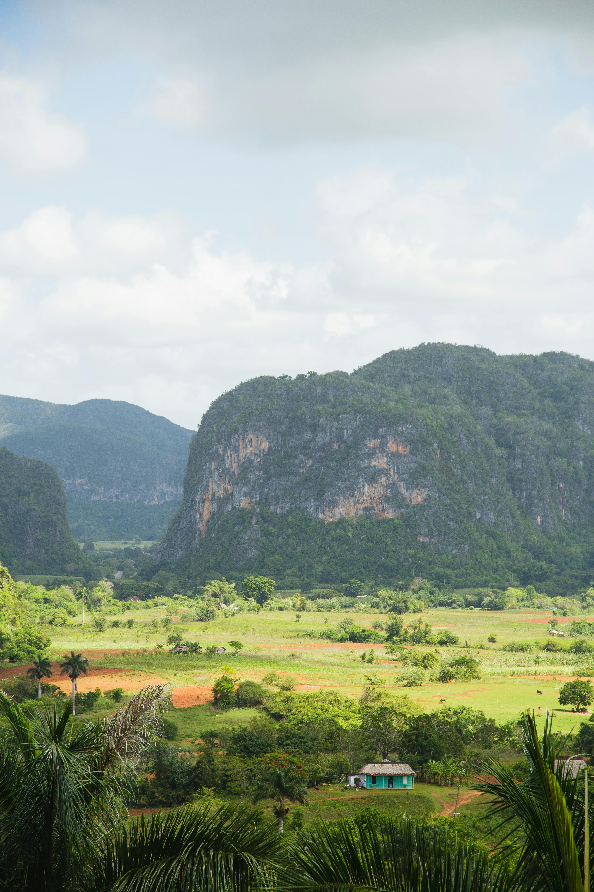

Gallery
Colors, culture, and everyday life
A collection of photos showcasing Cuba’s colors, culture, and everyday life — from quiet streets and busy plazas to sunsets and sea views.

Photo by Alleksana

Photo by Ryutaro Tsukata

Photo by Ryutaro Tsukata

Photo by Yuting Gao

Photo by Dimitri Dim

Photo by Clive Kim